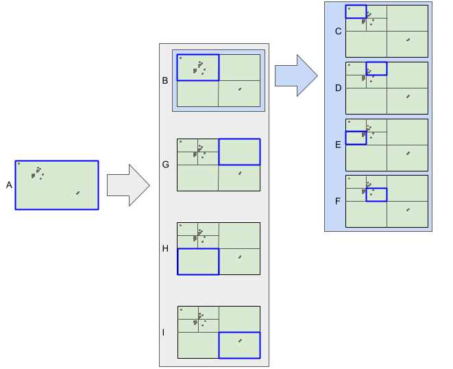

Finding geographical points of interest using Python
This blog will take a look at scraping the TomTom and Google Places APIs to get all the points of interest in an area. A recursive grid search algorithm is discussed that efficiently identifies all of the POIs in a large area where there is a limit on the number of results the API returns.
TomTom vs Google
First, let’s compare each API:
| TomTom | Google Places | |
|---|---|---|
| Max free daily requests | 2500 | 2500 |
| Max results returned | 100 | 20 |
| Point search | Yes | Yes |
| Max point search radius | none | 50km |
| Rectangle search | Yes | No |
| Up-to-date | No | Yes |
In each case, you need to register for your own API key which you include as a parameter in the search. Both provide the same number of free daily requests, but TomTom returns more results and allows you to search a broader area. Google’s results, however, are generally more up-to-date and complete.
The rectangular search function of the TomTom API allows us to recursively search smaller and smaller areas untill all points of interest are found so we use that instead of the Google API. Let’s look at the code.
Imports
We’ll use the requests library to make the API calls and pandas to view the results.
import os
import requests
import json
import pandas
Using the TomTom API category search
This function makes each API call and processes the results by only selecting the fields we need. It’s a good idea to save the full response to a text file as well.
def tomtom_category_search_request(api_key, category, top_left=None, btm_right=None):
# create the directory if it doesn't exist:
directory = 'output/' + category
if not os.path.exists(directory):
os.makedirs(directory)
url = """
https://api.tomtom.com/search/2/categorySearch/{category}.json?key={api_key}&topLeft={top_left}&btmRight={btm_right}&countrySet=ZA&limit=100
""".format(category=category, api_key=api_key, top_left=top_left, btm_right=btm_right)
filename = 'output/' + category + '/out_' + str(top_left).replace('.','') + '_' + str(btm_right).replace('.','') + '.txt'
response = requests.get(url)
data = response.json()
if 'httpStatusCode' not in data:
with open(filename, 'w') as outfile:
json.dump(data, outfile)
number_pois = len(data['results'])
poi_data = {}
# extract the fields we need
for result in data['results']:
name = result["poi"]["name"] if "name" in result["poi"] else None
id = result["id"] if "id" in result else None
lat = result["position"]["lat"] if "lat" in result["position"] else None
lon = result["position"]["lon"] if "lon" in result["position"] else None
categories = [j[0]["name"] for j in [i["names"] for i in result["poi"]["classifications"]]][0]
countrySubdivision = result["address"]["countrySubdivision"] if "countrySubdivision" in result["address"] else None
freeformAddress = result["address"]["freeformAddress"] if "freeformAddress" in result["address"] else None
poi_data[id] = {
'name': name,
'lat': lat,
'lon': lon,
'categories': categories,
'countrySubdivision': countrySubdivision,
'freeformAddress': freeformAddress
}
return {"data": poi_data, "filename": filename, "number_pois": number_pois}
else:
return {"error": "error"}
Testing this on the area around the Kalahari Mall in Upington:
api_key = '<My API KEY>' # get your API key here: https://developer.tomtom.com/tomtom-maps-apis-developers
result = tomtom_category_search_request(api_key, 'cash dispenser', '-28.416455,21.213253', '-28.457805,21.309467')
print("Number of POIs found: " + str(result['number_pois']))
print("Output file: " + result['filename'])
# display the first few results
display(pd.DataFrame.from_dict(result['data'], orient='index').head())
Number of POIs found: 18
Output file: output/cash dispenser/out_-28416455,21213253_-28457805,21309467.txt
| lon | freeformAddress | name | lat | categories | countrySubdivision | |
|---|---|---|---|---|---|---|
| ZA/POI/p0/11783 | 21.25640 | Oosterville, Khara Hais, Northern Cape, 8801 | FNB Kalahari Mall | -28.44360 | cash dispenser | Northern Cape |
| ZA/POI/p0/14482 | 21.24600 | Upington, Khara Hais, Northern Cape, 8801 | FNB Kalahari Pick And Pay Centre | -28.45380 | cash dispenser | Northern Cape |
| ZA/POI/p0/156887 | 21.24940 | Scott Street, Upington, Khara Hais, Northern C... | Standard Bank Elron Motors | -28.45490 | cash dispenser | Northern Cape |
| ZA/POI/p0/169466 | 21.24681 | Scott Street, Upington, Khara Hais, Northern C... | Capitec Bank Upington Scott Street | -28.45729 | cash dispenser | Northern Cape |
| ZA/POI/p0/186303 | 21.26872 | Hummel Street, Oosterville, Khara Hais, Northe... | ABSA Village Plaza Upington, Oosterville | -28.43968 | cash dispenser | Northern Cape |
Grid search
Since the API doesn’t return all the results, but rather only a maximum of 100, we need a way to find the rest of the POIs.
We start with the smallest rectangle that contains the whole search area. If the maximum number of results is returned for this area, there could be more lurking. So we subdivide the rectangle into 4 equally sized rectangles and repeat the search on each of them. In this way, we perform a narrower search on areas with a high concentration of POIs, but don’t waste API calls on sparsely populated areas.
In the fgure below, the search is performed first on rectangle A. Since the result limit was reached, the search is repeated on rectangle B. Again, the limit is reached, so the search is repeated on rectangles C, D, E, F. Then we go back to rectangles G, H and I - all of which returned a small number of results and so we are done.

def grid_search(top_left, btm_right, api_key, key_word, pois={}):
print('\nTop-left: ' + top_left)
print('Bottom-right: ' + btm_right)
result = tomtom_category_search_request(api_key, key_word, top_left=top_left, btm_right=btm_right)
num_discovered = 0
if 'error' not in result:
ids = set(result['data'].keys())
new_ids = ids.difference(set(pois.keys()))
num_discovered = len(new_ids)
for id in new_ids:
pois[id] = result['data'][id]
print("Total POIs found: " + str(len(ids)))
print("New POIs discovered: " + str(num_discovered))
# if the search returned the max number of results, subdivide
if result["number_pois"] > 98:
print('Subdividing...')
# subdivide
top_leftLat, top_leftLon = top_left.split(',')
btm_rightLat, btm_rightLon = btm_right.split(',')
midLat = str((float(top_leftLat) + float(btm_rightLat))/2)
midLon = str((float(top_leftLon) + float(btm_rightLon))/2)
new_grid = [
[[top_leftLat, top_leftLon], [midLat, midLon]], # top left block
[[top_leftLat, midLon], [midLat, btm_rightLon]], # top right block
[[midLat, top_leftLon], [btm_rightLat, midLon]], # bottom left block
[[midLat, midLon], [btm_rightLat, btm_rightLon]] # bottom right block
]
for grid in new_grid:
top_left = grid[0][0] + ','+ grid[0][1]
btm_right = grid[1][0] + ',' + grid[1][1]
grid_search(top_left, btm_right, api_key, key_word, pois)
return pois
Finding the shopping centres in a region of Cape Town:
ct_shopping_centers = grid_search('-33.823464,18.340948', '-34.005645,18.706288', api_key, 'shopping center')
Top-left: -33.823464,18.340948
Bottom-right: -34.005645,18.706288
Total POIs found: 100
New POIs discovered: 100
Subdividing...
Top-left: -33.823464,18.340948
Bottom-right: -33.9145545,18.523618
Total POIs found: 42
New POIs discovered: 13
Top-left: -33.823464,18.523618
Bottom-right: -33.9145545,18.706288
Total POIs found: 100
New POIs discovered: 88
Subdividing...
Top-left: -33.823464,18.523618
Bottom-right: -33.869009250000005,18.614953
Total POIs found: 8
New POIs discovered: 0
df = pd.DataFrame.from_dict(ct_shopping_centers, orient='index')
df.head()
| lon | freeformAddress | name | lat | categories | countrySubdivision | |
|---|---|---|---|---|---|---|
| ZA/POI/p0/11037 | 18.63308 | Carl Cronje Drive, Tygervalley Waterfront, Cit... | Builders Express - Willowbridge | -33.86798 | shop | Western Cape |
| ZA/POI/p0/11840 | 18.51077 | Orion Road, Nerissa Estate, City of Cape Town,... | Berco Indoor House | -33.99021 | house garden: garden centers services | Western Cape |
| ZA/POI/p0/120847 | 18.68818 | Langeberg Smallholdings, City of Cape Town, We... | Bonsai Centre Olive Grove | -33.84047 | house garden: garden centers services | Western Cape |
| ZA/POI/p0/127716 | 18.43191 | Zonnebloem, City of Cape Town, Western Cape, 8001 | Oriental Plaza | -33.92910 | shopping center | Western Cape |
| ZA/POI/p0/127884 | 18.69754 | Kiewiet Close, Okavango Park, City of Cape Tow... | Timbercity - Okavango Park | -33.85953 | shop | Western Cape |
TomTom used the ‘shopping center’ category loosely in the search.
df.categories.unique()
array(['shop', 'house garden: garden centers services', 'shopping center'],
dtype=object)
df = df.query('categories=="shopping center"')[['name', 'categories', 'lat', 'lon', 'freeformAddress', 'countrySubdivision']].rename(columns={'freeformAddress': 'Address', 'countrySubdivision': 'Province'})
And finally, write the dataframe to a .csv
df.to_csv('cape town shopping centers.csv', index=False)